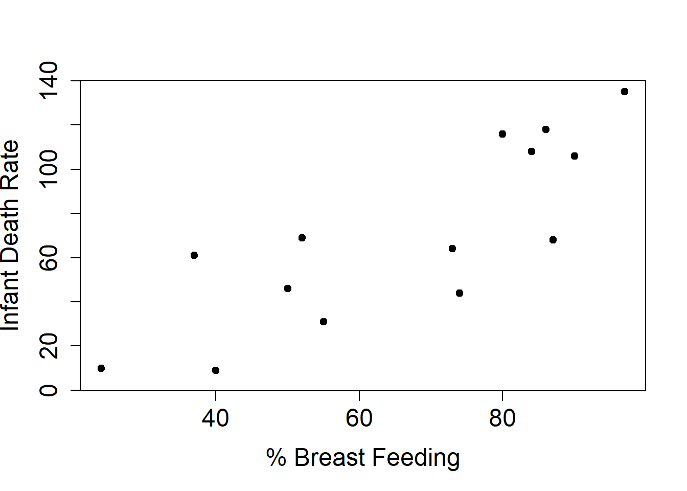
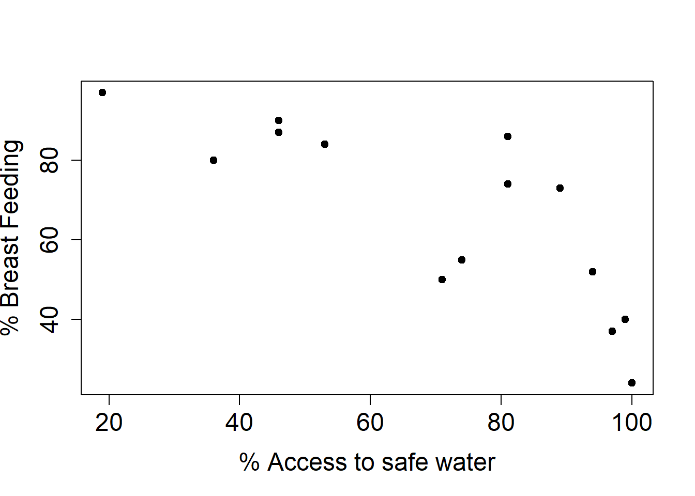
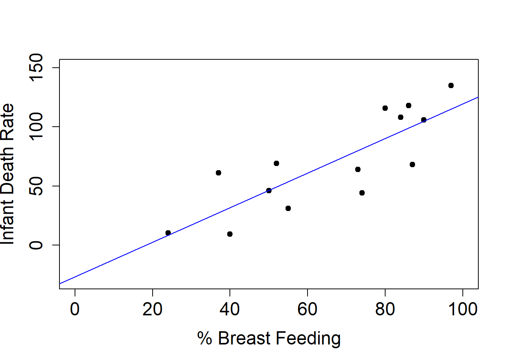
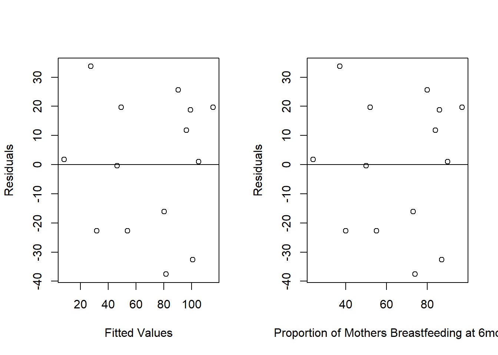
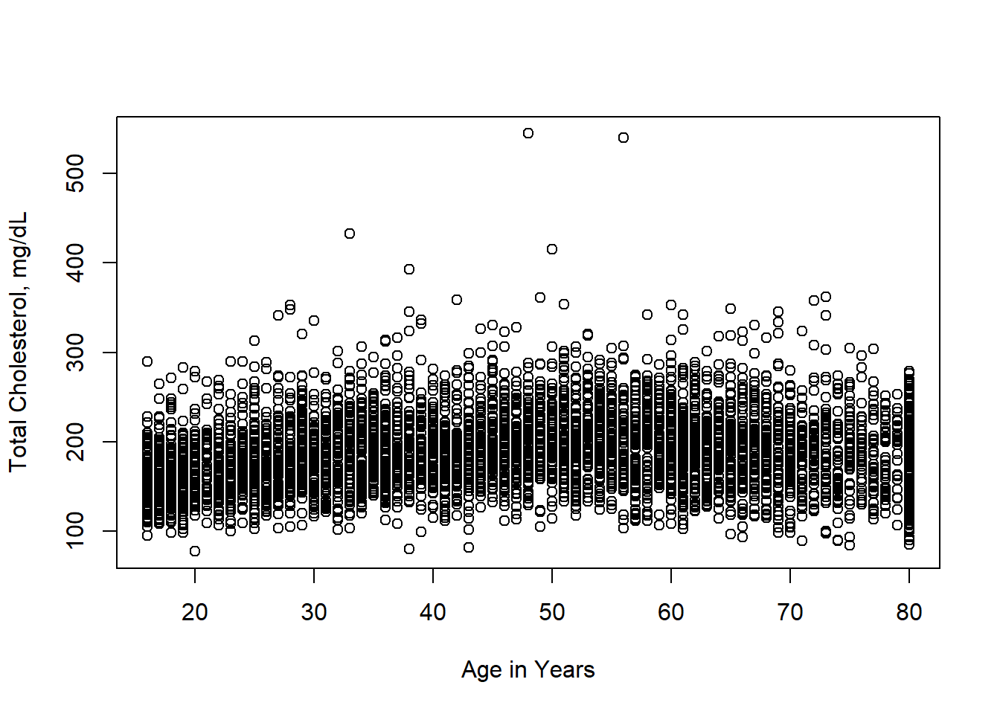
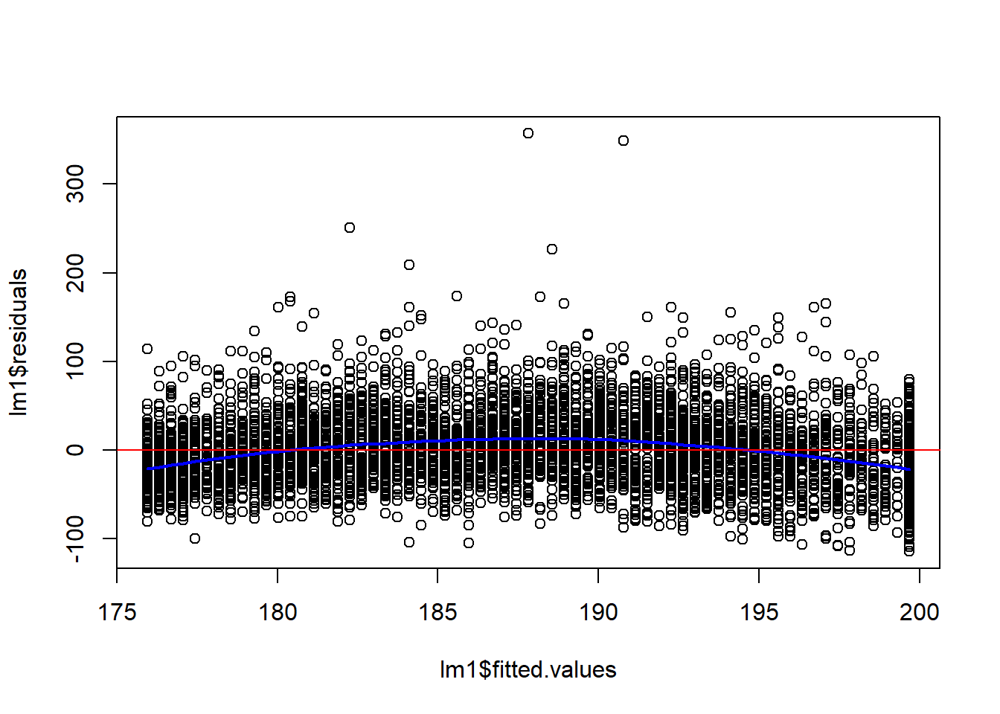

linelist <- readRDS("../data/linelist_cleaned.rds")Modeling and Testing
Data
We import the dataset of cases from a simulated Ebola epidemic.
Distributions in R
Every probability distribution in R has four functions, with a root distribution name and a single letter prefix:
- p for “probability”, the cumulative distribution function (c. d. f.)
- q for “quantile”, the inverse c. d. f.
- d for “density”, the density function (p. f. or p. d. f.)
- r for “random”, a random variable having the specified distribution
For instance, for the binomial distribution we have
p <- 0.3
n <- 10
# Probability of seeing at most 5 successes
pbinom(5, size=n, prob=p)[1] 0.952651# Get the 50th percentile of successes
qbinom(0.5, size=n, prob=p)[1] 3# The probability of seeing exactly 5 successes
dbinom(5, size=n, prob=p)[1] 0.1029193# Generate 40 random samples from this binomial distribution
set.seed(10)
rbinom(40, size=n, prob=p) [1] 3 2 3 4 1 2 2 2 3 3 4 3 1 3 2 3 1 2 3 4 5 3 4 2 3 4 4 2 4 2 3 1 2 5 3 4 4 6
[39] 4 3Performing simple tests
R has built-in functionality to perform common statistical tests. The functions take the form of NAME.test, such as t.test, shapiro.test, binomial.test, wilcox.test, etc.
Lets run a t-test:
# Specify data
t.test(age_years ~ gender, data = linelist)
Welch Two Sample t-test
data: age_years by gender
t = -21.344, df = 4902.3, p-value < 2.2e-16
alternative hypothesis: true difference in means between group f and group m is not equal to 0
95 percent confidence interval:
-7.571920 -6.297975
sample estimates:
mean in group f mean in group m
12.60207 19.53701 The formula syntax age_years ~ gender is used across different models and statistical methods in R. For a t-test, we want to put the numeric column on the left side of the equation and the categorical column on the right side.
t.test also has optional arguments to specify variations, such as if a test is paired or if the alternative hypothesis is single sided. We can perform a single-sample t-test against a specific value by using the argument mu.
t.test(linelist$age_years, mu = 25)
One Sample t-test
data: linelist$age_years
t = -54.114, df = 5801, p-value < 2.2e-16
alternative hypothesis: true mean is not equal to 25
95 percent confidence interval:
15.69293 16.34369
sample estimates:
mean of x
16.01831 The results of a test can be stored to get individual values.
result <- t.test(age_years ~ gender, data = linelist)
names(result) [1] "statistic" "parameter" "p.value" "conf.int" "estimate"
[6] "null.value" "stderr" "alternative" "method" "data.name" result$p.value[1] 9.894302e-97Regression
Example Analysis - Infant Mortality
library(tidyverse)── Attaching core tidyverse packages ──────────────────────── tidyverse 2.0.0 ──
✔ dplyr 1.1.3 ✔ readr 2.1.4
✔ forcats 1.0.0 ✔ stringr 1.5.0
✔ ggplot2 3.4.3 ✔ tibble 3.2.1
✔ lubridate 1.9.2 ✔ tidyr 1.3.0
✔ purrr 1.0.2
── Conflicts ────────────────────────────────────────── tidyverse_conflicts() ──
✖ dplyr::filter() masks stats::filter()
✖ dplyr::lag() masks stats::lag()
ℹ Use the conflicted package (<http://conflicted.r-lib.org/>) to force all conflicts to become errorsinfdeath = read.table( "../data/infdeath.txt", head=TRUE, sep="\t")
dim(infdeath)[1] 20 4colnames(infdeath)[1] "country" "safe" "breast" "death" We have 20 measurements on - safe=access to safe water - breast= percentage of mothers breast feeding at 6 months - death = infant death rate
When performing any time of analysis where we look at the relationship between two variables, we need to be careful to not mix up correlation and causation.
plot(infdeath$breast, infdeath$death, xlab="% Breast Feeding",
ylab="Infant Death Rate", pty="s", pch=19, cex.axis=1.5,
cex.lab=1.5)
Looking at this data naively, it suggests that longer time breast feeding leads to greater infant mortality.
plot(infdeath$safe, infdeath$breast, ylab="% Breast Feeding",
xlab="% Access to safe water", pty="s", pch=19, cex.axis=1.5,
cex.lab=1.5)
However, there is a latent variable which is actually influencing our result. Countries with access to safe water breast feed for less time.
Often, as in the example above, there is a third variable (access to clean water) that affects both the response and the predictor. To truly get at causation we typically need a randomized controlled experiment However, we cannot always do experiments, e.g. most epidemiology.
We can use the lm function in R to create a linear model. We then also use R’s formula notation to tell it what we want the model to describe. Here, we want to examine the relationship between mortality and breastfeeding, which we can specify by giving R the linear model y~x, or here infdeath$death ~ infdeath$breast. Note that we don’t need to tell R that we want the model to have an intercept, it incorporates one automatically.
plot(infdeath$breast, infdeath$death, xlab="% Breast Feeding",
ylab="Infant Death Rate", pty="s", pch=19, cex.axis=1.5,
cex.lab=1.5, xlim=c(0, 100), ylim=c(-30,150))
lm1 = lm(infdeath$death~infdeath$breast)
abline(lm1, col="blue")
We can directly output the model coefficients and other information, here the learned slope and intercept of the line, by using summary.
summary(lm1)
Call:
lm(formula = infdeath$death ~ infdeath$breast)
Residuals:
Min 1Q Median 3Q Max
-37.568 -21.047 1.368 19.479 33.705
Coefficients:
Estimate Std. Error t value Pr(>|t|)
(Intercept) -26.978 20.148 -1.339 0.205392
infdeath$breast 1.467 0.288 5.093 0.000265 ***
---
Signif. codes: 0 '***' 0.001 '**' 0.01 '*' 0.05 '.' 0.1 ' ' 1
Residual standard error: 23.86 on 12 degrees of freedom
(6 observations deleted due to missingness)
Multiple R-squared: 0.6837, Adjusted R-squared: 0.6573
F-statistic: 25.94 on 1 and 12 DF, p-value: 0.000265We can see that the intercept is about -27 and the slope is about 1.5.
Residual Plots
We can plot the residuals (\(y\)-axis) against any covariates (\(x\)’s) and the predicted values (\(\hat{y}\)’s). We want to look for trends, such as increasing or decreasing variability (fans), and outliers. When data are collected over time, we sometimes look for relationships between successive residuals.
Let’s return to our child birth example and make a residual plot.

Confidence and Prediction intervals
There are two kinds of predictions that are interesting:
- *Confidence interval*: predict the mean response for a given value of $x$
- *Prediction interval*: predict the value of the response $y$ for an individual whose covariate is $x$Almost all regression methods in R have prediction methods associated with them. Confidence intervals have less variability than prediction intervals.
Returning to our example on infant death
lm1 = lm(death~breast, data=infdeath)
summary(lm1)
Call:
lm(formula = death ~ breast, data = infdeath)
Residuals:
Min 1Q Median 3Q Max
-37.568 -21.047 1.368 19.479 33.705
Coefficients:
Estimate Std. Error t value Pr(>|t|)
(Intercept) -26.978 20.148 -1.339 0.205392
breast 1.467 0.288 5.093 0.000265 ***
---
Signif. codes: 0 '***' 0.001 '**' 0.01 '*' 0.05 '.' 0.1 ' ' 1
Residual standard error: 23.86 on 12 degrees of freedom
(6 observations deleted due to missingness)
Multiple R-squared: 0.6837, Adjusted R-squared: 0.6573
F-statistic: 25.94 on 1 and 12 DF, p-value: 0.000265We can predict the mean response for country where 62% of the women breast feed at 6 months using the `predict1 function.
predict(lm1, newdata=list(breast=62), interval="confidence") fit lwr upr
1 63.96593 49.8048 78.12705Or we can predict the response for a specific country where 62% of the women breast feed at 6 months
predict(lm1, newdata=list(breast=62), interval="prediction") fit lwr upr
1 63.96593 10.08279 117.8491Note how the lower and upper bounds are much tighter for the confidence interval than for the prediction interval.
Regressions using factors
As we’ve seen, a factor is a variable that takes on a discrete set of different values. These values can be unordered (e.g. Male/Female or European, Asian, African, etc.) or they can be ordered (age: less than 18, 18-40, more than 40). In regression models, we typically implement factors using dummy variables.
Fitting factors in regression models
Suppose we have a factor with \(K\) levels We can fit factors in two ways
- **M1:** includes an intercept in the model and then use $K-1$ indicator variables
- **M2L=:** no intercept and use $K$ indicator variables.In M1 the intercept is the mean value of \(y\), and each \(\beta_j\) is the difference in mean for the \(j^{th}\) retained factor level from the overall mean. In M2 each of the \(\beta_j\) is the mean value for \(y\) only within factor level \(j\).
To show an example, suppose our factor is sex, which has two levels, M and F. Our models could be
\[ M1: Y = \beta_0 + \beta_M \cdot 1_{M} + \epsilon \\ E[Y | F]= \beta_0 \quad \mbox{and} \quad E[Y|M] = \beta_0 + \beta_M \]
heights = runif(40, min=60, max=75)
sex = sample(c("M","F"), 40, replace=TRUE)
lm1 = lm(heights ~ sex)
summary(lm1)
Call:
lm(formula = heights ~ sex)
Residuals:
Min 1Q Median 3Q Max
-5.8438 -2.9168 -0.0762 1.8674 9.0004
Coefficients:
Estimate Std. Error t value Pr(>|t|)
(Intercept) 65.419 0.923 70.877 <2e-16 ***
sexM 0.903 1.245 0.726 0.473
---
Signif. codes: 0 '***' 0.001 '**' 0.01 '*' 0.05 '.' 0.1 ' ' 1
Residual standard error: 3.916 on 38 degrees of freedom
Multiple R-squared: 0.01366, Adjusted R-squared: -0.01229
F-statistic: 0.5265 on 1 and 38 DF, p-value: 0.4725Or
\[ M2: y = \beta_M \cdot 1_{M} + \beta_{F} \cdot 1_{F} + \epsilon \\ E[Y|F] = \beta_F \quad \mbox{and} E[Y|M] = \beta_M \]
# Adding -1 tells R that we don't want an intercept
lm2 = lm(heights ~ sex - 1)
summary(lm2)
Call:
lm(formula = heights ~ sex - 1)
Residuals:
Min 1Q Median 3Q Max
-5.8438 -2.9168 -0.0762 1.8674 9.0004
Coefficients:
Estimate Std. Error t value Pr(>|t|)
sexF 65.4191 0.9230 70.88 <2e-16 ***
sexM 66.3222 0.8349 79.44 <2e-16 ***
---
Signif. codes: 0 '***' 0.001 '**' 0.01 '*' 0.05 '.' 0.1 ' ' 1
Residual standard error: 3.916 on 38 degrees of freedom
Multiple R-squared: 0.9967, Adjusted R-squared: 0.9965
F-statistic: 5667 on 2 and 38 DF, p-value: < 2.2e-16Note that there are some issues you have to worry about when fitting a model without an intercept. With model M1 that has an intercept then for each group the test for \(H_0: \beta_j = 0\) tests whether that group mean is different from the mean for the group that was used to determine the intercept. However, in M2 the test for each group, \(H_0: \beta_j = 0\) is then comparing the mean for that group to zero (0). In M2, multiple-\(R^2\) does not have a reasonable interpretation, and we get a very high value.
Example Analysis - Spline Regression with NHANES
Load the data
There are 6063 observations, some are incomplete and have missing values for some covariates. There are 22 covariates, which have cryptic names and you need to use the meta-data to resolve them. The survey is very complex and typically any analysis requires a substantial amount of reading of the documentation. Here we will guide you past some of the hurdles.
We load up the data and the metadata. In the metadata we have a textual description of the phenotype, the short name, and the target. The target tells us which of the sampled individuals was eligible to answer the question.
nhanesDataPath = ""
load("../data/nhanes_spline/d4.rda")
load("../data/nhanes_spline/metaD.rda")
DT::datatable(metaD)We will look at the relationship between the variable LBXTC (which is Total Cholesterol in mg/dL measured by a blood draw) and the age of the participant in years.

And we can see that in this plot, over-plotting is a substantial issue here. You might also notice what seems like a lot of data at age 80, this is because any age over 80 was truncated to 80 to prevent reidentification of survey participants. In a complete analysis, this should probably be adjusted for in some way, but we will ignore it for now.
We can try some other methods, such as hexbin plotting and smoothScatter to get a better idea of the distribution of the data.

Now we can see a few outliers - with extremely high serum cholesterol. We get a sense that the trend is not exactly a straight line, but rather a parabola, lower for the young and the old and a bit higher in the middle.
We fit a linear model first.
lm1 = lm(d4$LBXTC ~ d4$RIDAGEYR)
summary(lm1)
Call:
lm(formula = d4$LBXTC ~ d4$RIDAGEYR)
Residuals:
Min 1Q Median 3Q Max
-114.68 -27.95 -2.91 23.34 357.19
Coefficients:
Estimate Std. Error t value Pr(>|t|)
(Intercept) 170.0140 1.4340 118.56 <2e-16 ***
d4$RIDAGEYR 0.3708 0.0285 13.01 <2e-16 ***
---
Signif. codes: 0 '***' 0.001 '**' 0.01 '*' 0.05 '.' 0.1 ' ' 1
Residual standard error: 41.24 on 5689 degrees of freedom
(372 observations deleted due to missingness)
Multiple R-squared: 0.02891, Adjusted R-squared: 0.02874
F-statistic: 169.4 on 1 and 5689 DF, p-value: < 2.2e-16plot(lm1$fitted.values, lm1$residuals)
##fit a loess curve
l2 = loess(lm1$residuals ~ lm1$fitted.values)
pl = predict(l2, newdata=sort(lm1$fitted.values))
lines(x=sort(lm1$fitted.values), y=pl, col="blue", lwd=2)
abline(h=0, col="red")
Notice that both terms in the model are very significant, but that the multiple \(R^2\) is only around 2%.
So age, in years, is not explaining very much of the variation. But because we have such a large data set, the parameter estimates are found to be significantly different from zero.
Spline Models
When a linear model does not appear sufficient we can try other models. One choice is to use natural splines, which are very flexible. They create a “knotted” line, where at each knot the slope of the line can change. They are based on B-splines with the prevision that the model is linear outside the range of the data.
However, we have to decide the number of knots we want to use in the model. Based on the initial analysis, we chose to use df=7, which gives five internal knots when fitting the splines. You have almost 6,000 degrees of freedom here, so using up a few to get a more appropriate fit seems good.
library("splines")
lm2 = lm(d4$LBXTC ~ ns(d4$RIDAGEYR, df=7))
summary(lm2)
Call:
lm(formula = d4$LBXTC ~ ns(d4$RIDAGEYR, df = 7))
Residuals:
Min 1Q Median 3Q Max
-113.43 -26.32 -2.88 22.47 343.31
Coefficients:
Estimate Std. Error t value Pr(>|t|)
(Intercept) 154.799 2.178 71.071 < 2e-16 ***
ns(d4$RIDAGEYR, df = 7)1 39.956 3.379 11.826 < 2e-16 ***
ns(d4$RIDAGEYR, df = 7)2 32.705 4.074 8.028 1.20e-15 ***
ns(d4$RIDAGEYR, df = 7)3 55.583 3.637 15.283 < 2e-16 ***
ns(d4$RIDAGEYR, df = 7)4 42.275 3.725 11.347 < 2e-16 ***
ns(d4$RIDAGEYR, df = 7)5 30.111 3.352 8.984 < 2e-16 ***
ns(d4$RIDAGEYR, df = 7)6 41.098 5.758 7.137 1.07e-12 ***
ns(d4$RIDAGEYR, df = 7)7 15.992 2.478 6.453 1.19e-10 ***
---
Signif. codes: 0 '***' 0.001 '**' 0.01 '*' 0.05 '.' 0.1 ' ' 1
Residual standard error: 39.62 on 5683 degrees of freedom
(372 observations deleted due to missingness)
Multiple R-squared: 0.1044, Adjusted R-squared: 0.1033
F-statistic: 94.65 on 7 and 5683 DF, p-value: < 2.2e-16We can use an anova to compare the models.
anova(lm1, lm2)Analysis of Variance Table
Model 1: d4$LBXTC ~ d4$RIDAGEYR
Model 2: d4$LBXTC ~ ns(d4$RIDAGEYR, df = 7)
Res.Df RSS Df Sum of Sq F Pr(>F)
1 5689 9674185
2 5683 8922039 6 752146 79.848 < 2.2e-16 ***
---
Signif. codes: 0 '***' 0.001 '**' 0.01 '*' 0.05 '.' 0.1 ' ' 1Analyzing Survey Data
library(tidyverse)
library(survey)
library(DT)
#library(flextable)
#library(officer)Data
all_nhanes <- read_csv("../data/nhanes_survey.csv")New names:
Rows: 31034 Columns: 28
── Column specification
──────────────────────────────────────────────────────── Delimiter: "," chr
(11): RIAGENDR, RIDRETH1, DMDBORN, age.cat, LBXGH.cat, RIDAGEYR.cat, LBX... dbl
(14): ...1, SEQN, RIDAGEYR, INDFMPIR, SDMVPSU, SDMVSTRA, WTINT2YR, WTMEC... lgl
(3): OHXDECAY, OHXREST, dental.caries
ℹ Use `spec()` to retrieve the full column specification for this data. ℹ
Specify the column types or set `show_col_types = FALSE` to quiet this message.
• `` -> `...1`nhanes_metadata <- read_csv("../nhanes_metadata.csv")Rows: 24 Columns: 4
── Column specification ────────────────────────────────────────────────────────
Delimiter: ","
chr (4): VariableName, SASLabel, EnglishText, Target
ℹ Use `spec()` to retrieve the full column specification for this data.
ℹ Specify the column types or set `show_col_types = FALSE` to quiet this message.datatable(nhanes_metadata)Preparing Survey Analysis
Removing NA weights
We can’t have any missing values in the survey design variables.
Creating combined survey weights
Currently, our survey weights WTSAF2YR are for each 2 year cycle. We need to combine them to represent the full 6-year period we are investigating. Luckily NHANES has an official guide for combining these weights. It turns out, all we need to do is divide all weights by 3.
##try de-tidying it to see if we can get the models to behave
wt_nhanes <- wt_nhanes %>%
mutate(WTMEC6YR = WTMEC2YR * 1/3)
wt_nhanes=data.frame(wt_nhanes)
wt_nhanes$diabetes = factor(wt_nhanes$diabetes, levels=c("nondiabetic","prediabetic","diabetic"))Creating the survey design object
The CDC describes the survey as follows: The sample design is a complex, multistage, clustered design using unequal probabilities of selection. Different groups (e.g., low-income persons, teens, older persons, and selected racial/ethnic populations) have been oversampled during specific survey cycles. Since 2011, the following groups have been oversampled: Hispanic persons; non-Hispanic black persons; non-Hispanic Asian persons; non-Hispanic white and other persons at or below 130 percent of poverty; and non-Hispanic white and other persons ages 80 and older. In 2015-16, the sampling design was revised, changing the cut-point for low-income oversampling from to at or below 185 percent of poverty. The estimation procedure used to produce national statistics for all NHANES involved inflation by the reciprocal of the probability of selection, adjustment for nonresponse, and post stratified ratio adjustment to population totals.
So to analyse this design we need to use some specialized survey analysis methods which are contained in the survey package written by Thomas Lumley.
nhanes_design <- svydesign(id = ~SDMVPSU,
strata = ~SDMVSTRA,
weights = ~WTMEC6YR,
nest = TRUE,
survey.lonely.psu = "adjust",
data = wt_nhanes)
summary(nhanes_design)Stratified 1 - level Cluster Sampling design (with replacement)
With (93) clusters.
svydesign(id = ~SDMVPSU, strata = ~SDMVSTRA, weights = ~WTMEC6YR,
nest = TRUE, survey.lonely.psu = "adjust", data = wt_nhanes)
Probabilities:
Min. 1st Qu. Median Mean 3rd Qu. Max.
1.556e-05 8.077e-05 1.532e-04 Inf 3.014e-04 Inf
Stratum Sizes:
44 45 46 47 48 49 50 51 52 53 54 55 56 57 58 59 60
obs 760 653 768 631 628 936 651 629 696 617 689 668 772 694 556 711 740
design.PSU 2 2 2 2 2 2 2 2 2 2 2 2 2 2 2 2 2
actual.PSU 2 2 2 2 2 2 2 2 2 2 2 2 2 2 2 2 2
61 62 63 64 65 66 67 68 69 70 71 72 73 74 75 76 77
obs 852 788 694 689 731 716 797 714 530 541 560 561 267 258 803 785 823
design.PSU 2 2 2 2 2 2 2 2 2 2 2 2 2 2 2 2 2
actual.PSU 2 2 2 2 2 2 2 2 2 2 2 2 2 2 2 2 2
78 79 80 81 82 83 84 85 86 87 88 89
obs 829 696 751 696 724 713 683 592 946 598 647 251
design.PSU 2 2 2 2 2 2 2 2 3 2 2 2
actual.PSU 2 2 2 2 2 2 2 2 3 2 2 2
Data variables:
[1] "...1" "SEQN" "RIDAGEYR" "RIAGENDR"
[5] "RIDRETH1" "DMDBORN" "INDFMPIR" "SDMVPSU"
[9] "SDMVSTRA" "WTINT2YR" "WTMEC2YR" "OHXDECAY"
[13] "OHXREST" "LBXGLU" "WTSAF2YR" "LBXGH"
[17] "BMXBMI" "Begin.Year" "EndYear" "age.cat"
[21] "LBXGH.cat" "RIDAGEYR.cat" "LBXGLU.cat" "BMXBMI.cat"
[25] "INDFMPIR.cat" "DMDBORN.cat" "dental.caries" "diabetes"
[29] "WTMEC6YR" Now we can take our data subset from the survey design object.
ado_design <- subset(nhanes_design, RIDAGEYR >= 13 & RIDAGEYR <= 18 & !is.na(OHXDECAY))
#Also make a tibble of this data to analyze
ado_data <- wt_nhanes %>%
filter(RIDAGEYR >= 13 & RIDAGEYR <= 18) %>% # Gets the 3660 nonedentulous adolescents
filter(!is.na(OHXDECAY)) %>% # Gets the 3346 with non-NA dental carie variable
filter(!is.na(diabetes)) # Gets the 3046 with a diabetic statusThese correctly replicate the counts in table 1a
tab1 = svytable(~age.cat + dental.caries, ado_design)
tab1 dental.caries
age.cat FALSE TRUE
13-15 5869985 6545245
16-18 4858434 7112471And then we can also replicate the ethnicity distributions
svytable(~RIDRETH1, ado_design)RIDRETH1
Mexican American Non-Hispanic Black
2764818 3542439
Non-Hispanic White Other Hispanic
15249583 1334732
Other Race - Including Multi-R
1494563 Logistic Regression
# Model 1: Unadjusted
logit1 <- svyglm(dental.caries~ diabetes, family=quasibinomial, design=ado_design, na.action = na.omit)
exp(coef(logit1)) (Intercept) diabetesprediabetic diabetesdiabetic
1.2899734 0.9875545 2.9022173 summary(logit1)
Call:
svyglm(formula = dental.caries ~ diabetes, design = ado_design,
family = quasibinomial, na.action = na.omit)
Survey design:
subset(nhanes_design, RIDAGEYR >= 13 & RIDAGEYR <= 18 & !is.na(OHXDECAY))
Coefficients:
Estimate Std. Error t value Pr(>|t|)
(Intercept) 0.25462 0.06871 3.706 0.000575 ***
diabetesprediabetic -0.01252 0.14228 -0.088 0.930250
diabetesdiabetic 1.06548 0.55644 1.915 0.061887 .
---
Signif. codes: 0 '***' 0.001 '**' 0.01 '*' 0.05 '.' 0.1 ' ' 1
(Dispersion parameter for quasibinomial family taken to be 0.9922246)
Number of Fisher Scoring iterations: 4A Wald test for diabetes:
regTermTest(logit1, ~diabetes)Wald test for diabetes
in svyglm(formula = dental.caries ~ diabetes, design = ado_design,
family = quasibinomial, na.action = na.omit)
F = 1.835058 on 2 and 45 df: p= 0.17135 Exploring packages
Predictive Modeling with TidyModels
This example comes from here
library(tidymodels)── Attaching packages ────────────────────────────────────── tidymodels 1.1.1 ──✔ broom 1.0.5 ✔ rsample 1.2.0
✔ dials 1.2.0 ✔ tune 1.1.2
✔ infer 1.0.5 ✔ workflows 1.1.3
✔ modeldata 1.2.0 ✔ workflowsets 1.0.1
✔ parsnip 1.1.1 ✔ yardstick 1.2.0
✔ recipes 1.0.8 ── Conflicts ───────────────────────────────────────── tidymodels_conflicts() ──
✖ scales::discard() masks purrr::discard()
✖ Matrix::expand() masks tidyr::expand()
✖ dplyr::filter() masks stats::filter()
✖ recipes::fixed() masks stringr::fixed()
✖ dplyr::lag() masks stats::lag()
✖ Matrix::pack() masks tidyr::pack()
✖ yardstick::spec() masks readr::spec()
✖ recipes::step() masks stats::step()
✖ Matrix::unpack() masks tidyr::unpack()
✖ recipes::update() masks Matrix::update(), stats::update()
• Search for functions across packages at https://www.tidymodels.org/find/iris_split <- initial_split(iris, prop = 0.6)
iris_split<Training/Testing/Total>
<90/60/150>iris_split %>%
training() %>%
glimpse()Rows: 90
Columns: 5
$ Sepal.Length <dbl> 6.9, 4.6, 6.0, 5.1, 6.5, 5.8, 5.1, 6.7, 5.0, 6.3, 5.0, 6.…
$ Sepal.Width <dbl> 3.2, 3.1, 2.2, 3.8, 3.0, 2.6, 2.5, 3.1, 2.3, 3.3, 3.4, 3.…
$ Petal.Length <dbl> 5.7, 1.5, 4.0, 1.5, 5.2, 4.0, 3.0, 4.7, 3.3, 4.7, 1.6, 5.…
$ Petal.Width <dbl> 2.3, 0.2, 1.0, 0.3, 2.0, 1.2, 1.1, 1.5, 1.0, 1.6, 0.4, 2.…
$ Species <fct> virginica, setosa, versicolor, setosa, virginica, versico…iris_recipe <- training(iris_split) %>%
recipe(Species ~.) %>%
step_corr(all_predictors()) %>%
step_center(all_predictors(), -all_outcomes()) %>%
step_scale(all_predictors(), -all_outcomes()) %>%
prep()
iris_recipe── Recipe ──────────────────────────────────────────────────────────────────────── Inputs Number of variables by roleoutcome: 1
predictor: 4── Training information Training data contained 90 data points and no incomplete rows.── Operations • Correlation filter on: Petal.Length | Trained• Centering for: Sepal.Length, Sepal.Width, Petal.Width | Trained• Scaling for: Sepal.Length, Sepal.Width, Petal.Width | Trainediris_testing <- iris_recipe %>%
bake(testing(iris_split))
glimpse(iris_testing)Rows: 60
Columns: 4
$ Sepal.Length <dbl> -1.03988748, -1.37857218, -0.92699258, -1.60436198, -1.03…
$ Sepal.Width <dbl> -0.16210326, 0.84405491, 0.84405491, -0.41364280, 0.08943…
$ Petal.Width <dbl> -1.2702255, -1.1382160, -1.2702255, -1.2702255, -1.402235…
$ Species <fct> setosa, setosa, setosa, setosa, setosa, setosa, setosa, s…iris_training <- juice(iris_recipe)
glimpse(iris_training)Rows: 90
Columns: 4
$ Sepal.Length <dbl> 1.21801055, -1.37857218, 0.20195643, -0.81409768, 0.76643…
$ Sepal.Width <dbl> 0.34097582, 0.08943628, -2.17441960, 1.85021308, -0.16210…
$ Petal.Width <dbl> 1.50197570, -1.27022555, -0.21414888, -1.13821596, 1.1059…
$ Species <fct> virginica, setosa, versicolor, setosa, virginica, versico…iris_rf <- rand_forest(trees = 100, mode = "classification") %>%
set_engine("randomForest") %>%
fit(Species ~ ., data = iris_training)iris_rf %>%
predict(iris_testing) %>%
bind_cols(iris_testing) %>%
glimpse()Rows: 60
Columns: 5
$ .pred_class <fct> setosa, setosa, setosa, setosa, setosa, setosa, setosa, s…
$ Sepal.Length <dbl> -1.03988748, -1.37857218, -0.92699258, -1.60436198, -1.03…
$ Sepal.Width <dbl> -0.16210326, 0.84405491, 0.84405491, -0.41364280, 0.08943…
$ Petal.Width <dbl> -1.2702255, -1.1382160, -1.2702255, -1.2702255, -1.402235…
$ Species <fct> setosa, setosa, setosa, setosa, setosa, setosa, setosa, s…iris_rf %>%
predict(iris_testing) %>%
bind_cols(iris_testing) %>%
metrics(truth = Species, estimate = .pred_class)# A tibble: 2 × 3
.metric .estimator .estimate
<chr> <chr> <dbl>
1 accuracy multiclass 0.9
2 kap multiclass 0.850Bayesian Statistics with Stan and brms
Adapted from here.
library(brms)
pr = prior(normal(0, 1), class = 'b')
bayesian_mixed = brm(
gpa ~ occasion + (1 + occasion | student),
data = gpa,
prior = pr,
cores = 4
)
prior_summary(bayesian_mixed)summary(bayesian_mixed)conditional_effects(bayesian_mixed)pp_check(bayesian_mixed)